← 站主随笔 · 资本配置 · 分章阅读
资本配置：五条原则，看管理层会不会把钱花对地方 · 中英对照 · 第 3 / 9 章
在资本配置的各项选项中，并购（M&A）代表的是企业资源最大规模的再分配之一。图表 15 展示了 1970 年至 2024 年美国每年的并购交易量，以及并购交易额占销售额的比例。2024 年的并购交易总额为 US$1.4 万亿，相当于销售额的 5.8%，而在 2025 年上半年，与上年同期相比增长了 10.8%。图表显示，并购往往具有周期性。早期行动者往往比那些在周期后段才出手收购的公司表现更好。28
The chart shows that M&A tends to be cyclical. Early movers tend to do better than companies that buy later in the cycle.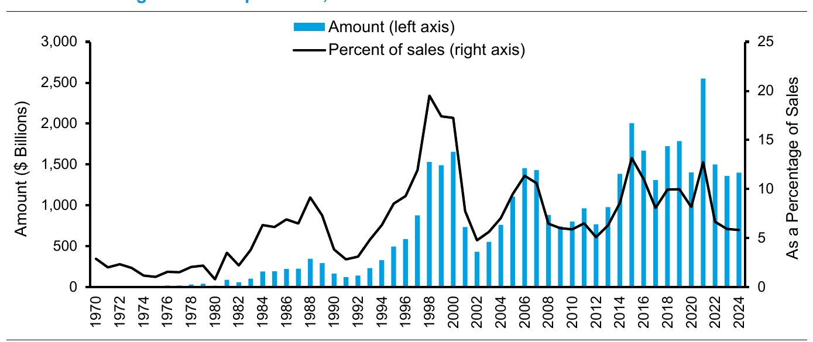
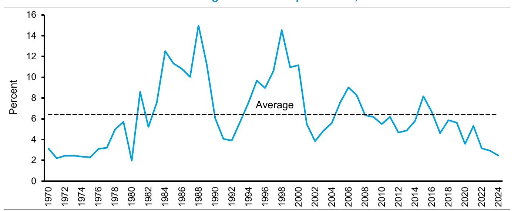
并购还与更高的股价水平和估值水平相关。29例如，在过去 55 年中，以占销售额的百分比衡量，并购活动的高峰出现在 1990 年代末的市场上涨期。
并购的普遍性意味着，几乎所有公司都直接或间接受到其影响。例如，在 1990 年代和 2000 年代，10 家上市公司中有 9 家至少做过一笔交易。30图表 16 展示了 1970 年至 2024 年并购交易额占市值的年度比重。其均值为 6.4%，并于 1988 年达到 15.0% 的峰值。
It has averaged 6.4 percent and peaked at 15.0 percent in 1988.虽然我们的关注点是公开市场中的资本配置，但私募股权（PE）公司的收购在整体并购活动中扮演着值得注意的角色。所谓收购，是指金融赞助方买下一家现金流强劲的公司，并以相对较高的债务权益比为交易融资。买方随后会寻求改善经营与公司治理、偿还债务，并以盈利的价格把公司卖掉。
图表 17 展示了私募股权交易占并购总量的百分比。收购行业在 1980 年代末经历了一波活跃期，随后在 1990 年代初崩盘，并在接下来的十年中复苏。2008 年金融危机前夕，活动急剧增长，此后再次陡降，并自那时起稳步增长。2000 年以来，私募股权交易平均占交易总量的 15%；1985 年以来平均占 13%。该比重在 2007 年达到交易量的 31%，并在 1998 年降至 2% 的谷底。
Private equity deals have averaged 15 percent of deal volume since 2000 and 13 percent since 1985. They peaked at 31 percent of volume in 2007 and troughed at 2 percent in 1998.公司通常会去做那些能强化自身战略地位的交易。31事实上，大多数交易都有合理的战略逻辑。但交易还必须在财务上讲得通，才能为买方创造价值。CEO 和董事会常常因傲慢而出价过高。32一笔在战略上讲得通的交易，如果价格不对，仍可能是一个糟糕的资本配置决策。
But deals must also make financial sense to create value for the buyer. CEOs and boards often show hubris by bidding more than they should.这正是沃伦·巴菲特的制度性必然（institutional imperative）发挥作用的地方。制度性必然的表现包括：拥有愿意支持领导者任何决策的下属，以及公司之间相互模仿的倾向，其中包括与并购有关的决策。33
凯洛格管理学院的荣休教授阿尔弗雷德·拉帕波特（Alfred Rappaport），以及德勤咨询并购业务合伙人马克·西罗尔（Mark Sirower），解释了为什么并购交易对买方而言很难创造价值。第一个原因是支付过高的风险。即便是聪明的战略型交易，如果溢价过高、超出买方收回投资所能覆盖的水平，也不会带来回报。
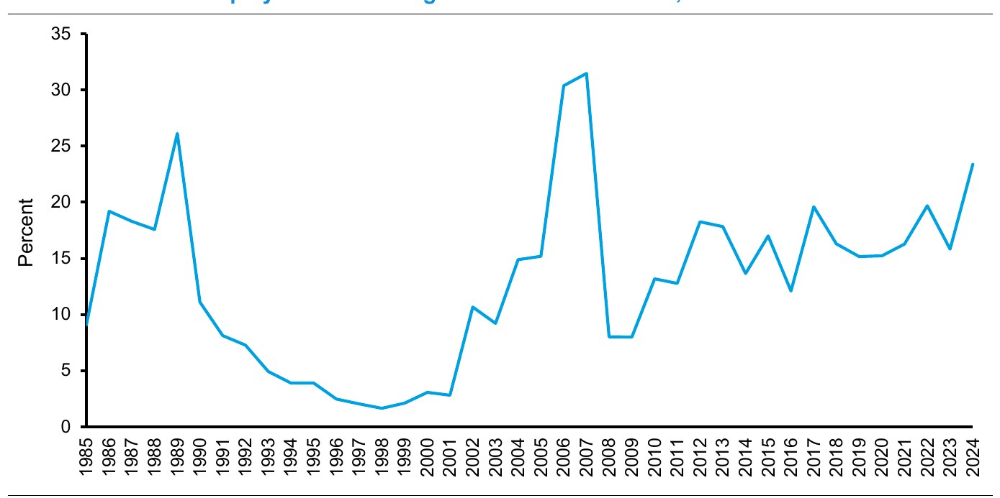
做一笔交易会释放战略意图的信号，也需要付出努力。在某些情况下，竞争对手可以复制一笔交易带来的收益。他们还可以利用买方在整合标的公司时的注意力分散。卖方通常会为不确定的未来收益要求一大笔预付款，这使得投资者的质疑完全有正当理由。而且与许多其他决策不同，并购交易通常代价高昂、很难逆转。34
总体而言，并购创造价值——这是通过比较买卖双方在交易前后的合并股权价值来衡量的。问题在于，收购方股票的价值在交易公告之后常常下跌，这反映出财富从买方股东向卖方股东的转移。这是买方为说服卖方达成交易所支付溢价的结果。
The problem is the value of the acquiring company’s stock often goes down following the announcement of a transaction, reflecting a wealth transfer from the shareholders of the buyer to the shareholders of the seller.一项针对 1995 年至 2018 年 1,267 笔交易的研究显示，在公告发布时，买方股价有 60% 的情况出现下跌，且全样本的平均变化为 -1.6%。35这些汇总数字自然掩盖了大量差异。相当多的交易确实为买方创造了价值。
关于并购的大量研究提供了基准比率，供公司和投资者用来寻找恰当的参照类。这些参照类的结果，有助于看清哪一类交易通常能够增加价值。以下是其中几个参照类：
评估资本配置的各项选项并不容易，我们稍后会给出一种评估并购的办法。但值得注意的是，交易完成后每股收益（EPS）的增厚或摊薄，是许多利益相关方着重关注的指标。咨询公司凯睿（Kearney）的一项调查显示，在衡量一笔并购交易时，投资者关系专业人士认为高管层、卖方分析师和投资者最看重的指标是 EPS 增厚。四分之三的受访者表示，利益相关方对 EPS “高度强调”，只有 2% 的受访者报告说 EPS “完全没有得到强调”。
Three-quarters of the respondents said that stakeholders place a “strong emphasis” on EPS, and only 2 percent reported that it received “no emphasis.”EPS 增厚或摊薄在感知上的重要性，压倒了其他所有指标。43这种看法几乎没有实证基础。严谨的研究显示，买方股票的超额收益与 EPS 的变化基本无关。44
Careful studies show excess returns for the buyer’s stock is essentially independent of EPS changes.例如，我们对 2015 年和 2016 年公布的 95 笔并购交易做了详细分析，这些交易包含管理层关于 EPS 增厚或摊薄的说明，以及潜在协同效应的规模。随后，我们考察了公告发布后买方股票的超额收益。
我们把每一笔交易放进一个 3×3 的方格中。列对应管理层所表述的预期 EPS 影响（负、中性、正），行对应超额收益（负、中性、正）。格子里最拥挤的一格——95 笔交易中的 45 笔——是 EPS 为正而超额收益为负。对这些买方来说，盈利上升了，股价却下跌了。45
并购和资本配置的其他选项一样，当买方实现的价值超过其支付的价格时，才算成功。马克·西罗尔建议买方和投资者使用下面这个公式：46
交易净现值 = 协同效应的现值 – 溢价Net present value of the deal = present value of the synergies – premium
简言之，这个公式试图量化买方是否物有所值。请注意，公司越来越多地披露协同效应估算值，这为评估交易提供了依据。47研究表明，协同效应往往不足以支撑所承诺的溢价。48但当协同效应的现值超过溢价时，股票市场的初始反应会更正面。49下面我们来看协同效应和溢价。
But the stock market’s initial reaction is more favorable when the present value of synergies exceeds the premium.简单的现实是：协同效应很难兑现。50虽然可以界定各种类型的协同效应，但一个简单的分类是成本协同效应或收入协同效应。51大多数协同效应基于经营层面，不过买方也可以获取财务协同效应。52如果管理层分享具体的数字并加以有效解释，市场会认为这些协同效应更可信。53
与此一致，成本协同效应比收入协同效应更可靠。54图表 18 展示了麦肯锡（McKinsey）顾问就公司是否实现预期成本与收入协同效应所做的调查。结果显示，36% 的公司达到了或超过了预期的成本协同效应。未达预期的常见原因包括低估一次性成本，以及未能检视过往交易以校准预期。
Thirty six percent of companies reported reaching or exceeding their anticipated cost synergies.但收入协同效应的结果要差得多。只有 17% 的公司表示其收入协同效应超过了预测。乐观错判的来源包括低估客户流失，以及对市场增长或目标市场份额作出不切实际的假设。在并购中，要落实足以实现充分协同效应所需的流程并不容易。55
Only 17 percent of companies said they surpassed their revenue synergy forecasts.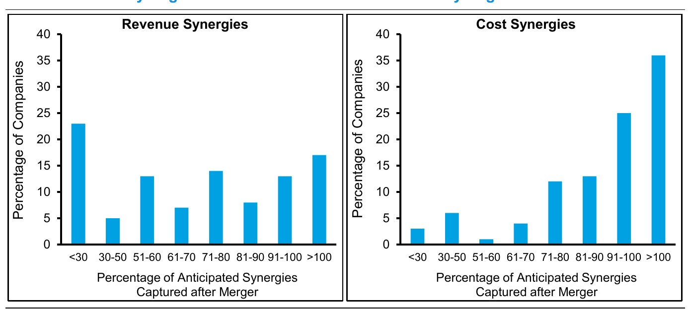
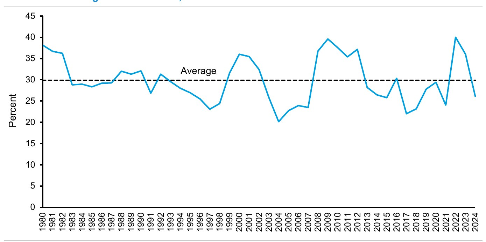
图表 19 展示了 1980 年至 2024 年每一年的平均交易溢价。整个序列的平均值为 30%。本分析中的每笔交易权重相同。溢价的计算方式是买方支付的价格与任何交易预期形成之前标的公司当时市场价格之间的差额。举例来说，如果一家标的公司的股票交易在 US$100，而竞买人出价 US$130，那么溢价就是 30%（US$30 ÷ US$100）。对任何一笔具体交易而言，溢价的计算通常相当直接，但要把一整个溢价序列汇总起来则很困难。
股东价值风险（shareholder value at risk, SVAR）是衡量并购交易中买方股价下行风险的有用方法。56在现金交易中，SVAR 定义为所承诺的溢价除以买方的市值。例如，如果买方出价 US$200 的溢价以收购一家标的公司，而买方的市值为 US$2,000，那么 SVAR 为 10%（US$200 ÷ US$2,000）。
SVAR 意味着，在合并完全没有协同效应的情况下，从买方转移到卖方的财富金额。它让你了解这笔赌注有多大，以及有多少价值处于风险之中。
在现金交易中，SVAR 总是高于股票交易。在股票交易中，SVAR 的计算方式为所承诺的溢价除以买方市值加上卖方市值（含溢价）。沿用前面的数字，假设这次交易改用股票支付，且卖方在交易前的价值为 US$800，那么 SVAR 将为 6.7%（US$200 ÷（US$2,000 + US$1,000））。
SVAR is always higher in a cash deal than a stock deal.其中的启示是：选择发行股票而非支付现金，意味着卖方要共同承担实现协同效应的风险。在实践中，如果交易向市场传递出买方或卖方任何一方的独立经营价值过高的信号，买方股价的下跌幅度可能超过溢价本身。
对大多数公司而言，并购比其他资本配置决策更偶发。在一家上市公司收购另一家上市公司的情形下，投资者应当在交易公告时回答以下几个问题，以评估这笔交易：57
你可以用 SVAR 来衡量重要性。SVAR 高的交易值得仔细审视。SVAR 并不总是显而易见，因为交易结构各不相同，而且大多数公告所依据的是股价，而不是溢价与市值。
交易的性质同样提供了可供借鉴的参照类。运营型交易平均表现好于转型型交易，地理上更近的交易往往好于距离遥远的交易，而收购私有公司的交易通常好于收购其他上市公司。58
支付方式本身也可以传递信号。图表 20 展示了 1980 年至 2024 年全现金交易与全股票或混合交易的构成。现金交易的表现好于股票交易，或好于由现金与股票混合融资的交易。正如 SVAR 的计算所揭示的那样，确信自己能够创造超过溢价之协同效应的高管，应当使用现金支付，因为这样他们就能把全部价值为自己的股东所捕获；对协同效应收益没有把握的管理者，则通过用股票支付来同时降低回报与风险。正如引言中所述，发行股票与随后的糟糕股东总回报（TSR）相关联。
Cash deals have performed better than stock deals or deals that are financed with a blend of cash and stock.我们可以用西罗尔的公式来估算股票市场的反应。在管理层披露成本协同效应的情况下，可以把税后协同效应指引除以资本成本，再把结果与所给出的溢价相比。我们发现，这一计算虽然并不完美，却比每股收益变化之类的经验法则提供的信息多得多。
最后，你可以在市场消化完消息、反映出投资者共识意见之后，评估市场对这笔交易的看法。这会体现为买方和卖方股价的变化。把市场反应的预测与实际发生的情况做比较。例如，当市场质疑买方实现其所宣称协同效应的能力时，买方股价的跌幅会大于公式所暗示的水平。对于重大的收购，对潜在协同效应做更深入的分析，可以为你在某只股票上形成差异化的观点提供机会。
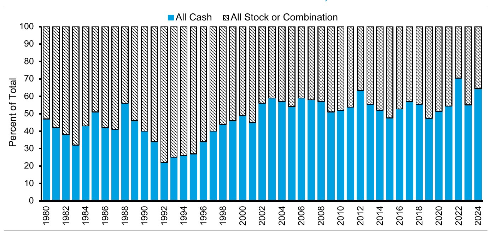
管理团队和投资者有时会否定市场收益给出的反馈，认为它们是短期导向的，因此没有信息量。我们回到对 1,267 笔交易的研究。该分析纳入了上市公司之间的交易，购买价格为 US$1 亿（US$100 million）或以上，且卖方价值至少相当于买方价值的 10%。样本包含了 1995 年至 2018 年间公布的所有符合这些标准的交易。
图表 21 展示了结果。首先，市场对其中 508 笔交易（即 40%）报以欢迎，平均初始反应为 +7.7%。市场对其余 60% 交易的平均初始反应为 -7.8%。这些数字的计算方式是测量从公告前五天到公告后五天、经行业调整后的总收益。
First, the market greeted 508 of the deals, or 40 percent, with an average initial response of +7.7 percent. The market’s average initial response to the other 60 percent of the deals was -7.8 percent.一个值得注意的点是，买方的成功率随时间推移在改善。该研究的作者把样本分成三个时间段。1995-2002 年，买方获得正收益的比例为 36%。2003-2010 年，该比例升至 40%。在最后一个时期，即 2011 年至 2018 年，收购方的股价有 44% 的情况出现上涨。这与其他研究的结论一致，即自 2008-2009 年金融危机结束以来，并购中买方的回报有所改善。59
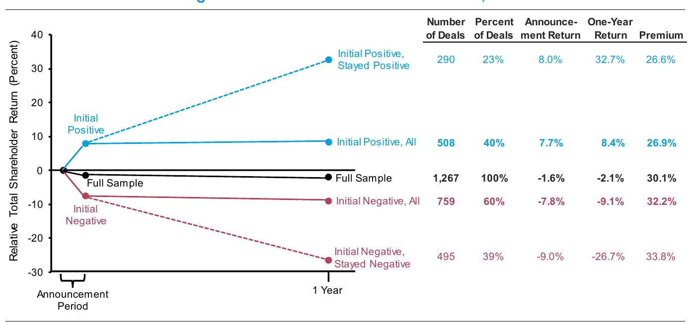
该研究随后把收益考察窗口延长到公告后一年，以观察正负反应是否延续。研究者发现，最初 508 次正反应中有 290 次（57%）得以延续，而最初 759 次负反应中有 495 次（65%）得以延续。这表明，虽然市场在评估交易时并不完美，但初始反应是有信息量的，而且相对无偏。同样重要的是，糟糕的结果比好的结果略更可能延续。
The researchers found that 290 of the initial 508 positive responses (57 percent) persisted compared to 495 of the initial 759 negative responses (65 percent).最后，所支付的溢价与交易成功之间存在直接关系。成功的交易平均而言溢价低于失败的交易。这符合逻辑，因为这反映出买方为了创造价值必须实现的协同效应规模。
过去半个世纪，投资发生了从有形投资到无形资产投资（intangible investment）的明显转移。例如，在美国，1970 年代的有形投资大约是无形投资的两倍，而近年来这一比例已经反转。60对公司市场价值进行拆分的分析表明，26% 至 68% 的价值可归因于无形资本。61
Analysis that decomposes the market value of firms suggests that 26 to 68 percent of the value is attributable to intangible capital.关于资本配置的多数讨论聚焦于有形投资，包括资本开支（capex）和营运资本。有形资产是指你能够触摸到的资产。无形资产是非实体的。例子包括软件代码、品牌建设营销、客户获取成本和员工培训（见图表 22）。
计量有形投资相对直接，因为它们在现金流量表和资产负债表上表现为各自独立的列报项目。而计量内部生成的无形投资则颇具挑战，因为在利润表上，它们与维持性支出混同计入销售、一般及行政费用（SG&A）之中。62
Measuring internally-generated intangible investments is a challenge because they are commingled with maintenance spending within selling, general, and administrative (SG&A) expenses on the income statement.有形投资与无形资产投资的会计处理方式不同，这使得财务报表的信息含量随时间推移而下降。631974 年，美国财务会计准则委员会（FASB）决定企业应将研发（R&D）——一种重要的无形资产投资形式——费用化。FASB 曾考虑将研发资本化，即比照有形投资的处理方式，但最终他们认定「单个研发项目的未来收益通常存在高度不确定性」。其研究得出的结论是，「研发成本与特定未来收入之间的直接关系通常尚未得到证实」。64
The FASB considered capitalizing R&D, which would have treated it similarly to tangible investments, but they decided that “there is normally a high degree of uncertainty about the future benefits of individual research and development projects.” Their research concluded that “a direct relationship between research and development costs and specific future revenue generally has not been demonstrated.”当支出与收益之间的联系不清晰时，会计师选择保持保守，这意味着将研发及其他无形资产投资费用化。这一做法并非毫无依据，因为研究显示研发的回报不确定性高于资本开支的回报。65尽管如此，如今已有大量证据证实：重述财务报表以反映无形资产投资，能提升其解释资产价格的有效性。66
That said, there is now a large body of evidence confirming that recasting financial statements to reflect intangible investments improves their usefulness in explaining asset prices.要让有形投资与无形资产投资处于同等地位，做法是在资产负债表上将无形资产投资资本化，并在随后的期间对其摊销。摊销费用体现在利润表上。
主要难点在于确定 SG&A 中有多少属于可自由支配的无形投资，又有多少属于维持当前经营所必需的维持性费用。但难点还不止于此。一旦估算出投资金额并确认一项内部生成的无形资产，还需要为这些资产设定使用寿命以便摊销。这将使有形投资与无形资产投资得以被同等对待。
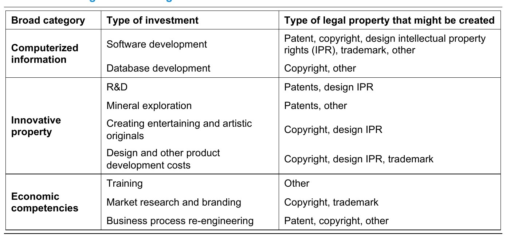
学界正在积极研究如何从 SG&A 中剥离出无形资产投资，并估算资产使用寿命的方法。67最常见的做法是假设研发全部、以及剔除研发后的 SG&A 的 30% 属于无形资产投资。68一些较新的研究按行业对无形资产投资和资产寿命的估计进行差异化处理。69无形资产密集型行业的财务报表调整幅度很大，而有形资产密集型行业则变化甚微。70
为估算剔除研发后的投资性 SG&A（investment SG&A ex-R&D），我们取 SG&A 总额，减去研发，再乘以会计学教授 Aneel Iqbal、Shivaram Rajgopal、Anup Srivastava 和 Rong Zhao 所估算的投资比例。71图表 23 展示了结果。2024 年剔除研发后的投资性 SG&A 超过 US$2.0 万亿，而 1970 年仅为 US$500 亿。该合计数占销售额的比重从 1970 年的 9.3% 升至 2024 年的 10.1%。将投资性研发加到 2024 年的结果上，无形资产投资总额达到 US$2.7 万亿。
Investment SG&A ex-R&D was more than $2.0 trillion in 2024, up from $50 billion in 1970. The sum has risen from 9.3 percent of sales in 1970 to 10.1 percent in 2024. Adding investment R&D to the 2024 result brings the total for intangible investment to $2.7 trillion.要衡量剔除研发后的 SG&A 的净投资规模，还需考虑摊销。图表 24 展示了我们对 1970 至 2024 年剔除研发后的投资性 SG&A 扣除摊销后的估算结果。2024 年该项合计占销售额的 0.7%，整个期间平均为销售额的 1.8%。换个说法，摊销金额大约相当于剔除研发后的投资性 SG&A 的 80%。
The total was 0.7 percent of sales in 2024 and averaged 1.8 percent of sales over the full period. Saying it a little differently, amortization has been around 80 percent of investment SG&A ex-R&D.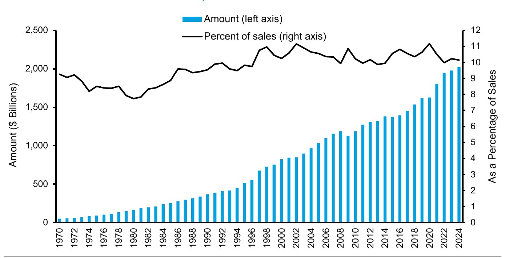
尽管很少有研究直接关注无形资产投资与价值创造之间的联系，但有一些迹象表明它是一项好投资。例如，所谓的「超级明星」公司——即 ROIC 高于平均、且往往在无形资产上大量投入的公司——其每单位投入资本的产出高于竞争对手。72那些通过 SG&A 大量投入无形资产的公司，平均也能获得正的超额回报。73这说明这些投资的实际回报高于市场原先的预期。最后，当广告支出提升了客户价值、并由此带来支付意愿时，其回报看起来是不错的。74
For example, so-called “superstar” firms, those with above-average ROICs that often invest heavily in intangible assets, have higher output per unit of invested capital than their rivals.图表 25 展示了按传统口径计算的 ROIC 分布（虚线条），以及经内部生成无形资产调整后的分布（实线条）。中位数变动不大，但调整使两端数值向均值回归。我们认为，这些调整能更准确呈现企业经济性的真实面貌。
The median does not move much but the adjustment regresses the extremes toward the average. We believe these adjustments result in a more accurate view of the economics of the businesses.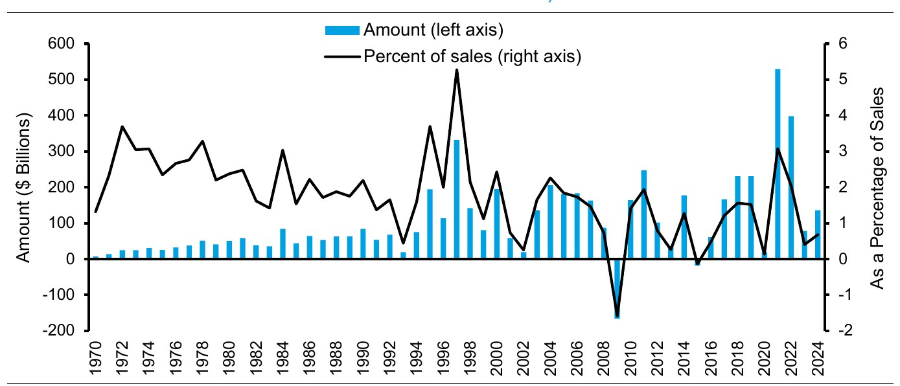
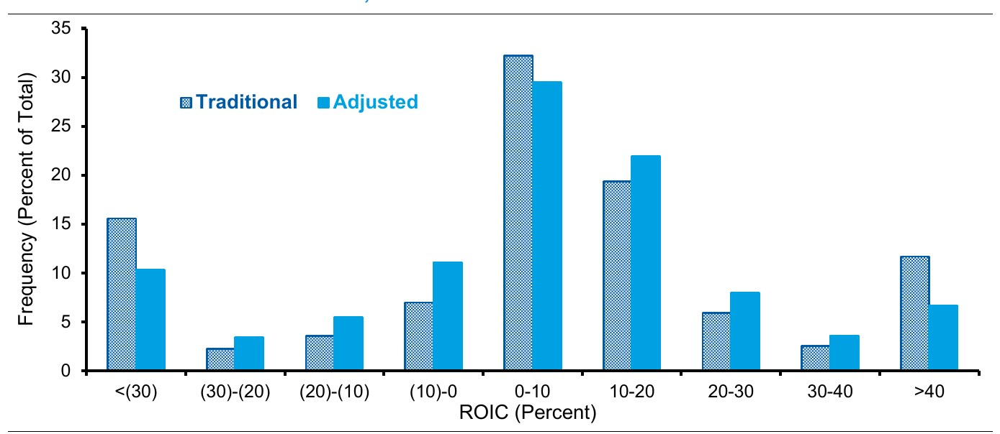
2024 年，企业在资本开支（capex）上分配了 US$1.5 万亿，相当于销售额的 6.3%。资本开支通常是资本用途中排名前三的用途之一。与无形资产投资类似，资本开支的周期波动性弱于并购（M&A）。
Companies allocated $1.5 trillion, or 6.3 percent of sales, to capital expenditures in 2024. Capital expenditures are generally one of the top three uses of capital. Similar to intangible investment, capital expenditures are less cyclical than M&A.图表 26 以金额和占销售额百分比两种口径展示了 1970 至 2024 年的资本开支。在此期间，支出占销售额的比重于 1973 年见顶，达 9.4%；2009 年见底，为 5.5%。2015 年该比重回升至 7.2%，反映出能源与材料板块的支出增加。过去十年这一比重持续走低，疫情期间支出降至接近历史低点，随后小幅回升。
Over this period, spending peaked at 9.4 percent of sales in 1973 and troughed at 5.5 percent of sales in 2009. Spending rebounded to 7.2 percent of sales in 2015 reflecting increases in spending in the energy and materials sectors.管理层与投资者通常把资本开支拆分为两部分。第一部分是维持性资本开支，即维持或替换现有长期资产所必需的最低支出。第二部分是为了追求增长、创造价值的投资性支出。受访投资者表示，他们希望能够区分维持性资本开支与增长性资本开支。75
许多投资者抱着一个简单假设：折旧是维持性资本支出的合理代理变量。这一假设有其道理，因为会计师把资产成本记录在资产负债表上，再估算其使用寿命以确定折旧进度。例如，若一家公司花 US$1,000购置一台使用年限为 5 年的机器，它会在此后每年计提 US$200折旧，以匹配收入与费用。若折旧能够近似维持性需求，那么只有超出折旧部分的资本开支才属于投资。
For instance, if a company pays $1,000 for a machine that has a 5-year life, the company will depreciate $200 per year over that time in order to match revenue and expense. If depreciation approximates maintenance needs, only the capital expenditures above depreciation are an investment.按此定义，整个期间归属于投资的资本开支占资本开支总额的 38%。维持性支出必不可少，这解释了资本开支相当大一部分的稳定性。更进一步看，它意味着在评估资本开支的价值创造前景时，最好把注意力集中在支撑增长的那一部分上。学术研究显示，这一区分对投资者是有用的。76
Using this definition, capital expenditures attributable to investment were 38 percent of total capital expenditures over the full period. That spending for maintenance is essential explains a good deal of the stability of capital expenditures.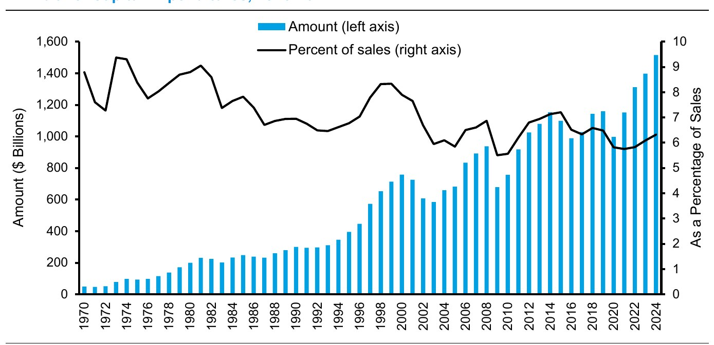
图表 27 展示了我们所研究样本中资本开支减折旧后的金额。按此口径，投资占销售额的比重于 1974 年见顶，达 5.6%；2020 年见底，为 0.5%。过去十年的平均值为 1.6%。
把折旧作为维持性资本开支代理变量的两大实质性局限，在于通胀和技术淘汰风险。在物价上涨时期，替换新设备所需的资本开支会超过折旧，因为新增支出反映了通胀，而折旧基于历史成本。77技术淘汰快于预期，会导致资产使用寿命被高估、折旧被低估。
中欧国际工商学院会计学助理教授 Venkat Peddireddy 提出了一套衡量维持性支出的框架，称为「累计产能成本」（cumulative capacity cost）。它是五年期间内折旧与摊销（D&A）、资产减记、资产出售损失、商誉减值和无形资产减值的合计。由于纳入了减记、损失与减值，这一指标既能反映技术淘汰的证据，也能反映正常损耗。
Peddireddy 的结论是，折旧低估了维持性资本开支，幅度约为 20%（见图表 28）。这一比例在不同行业之间差异显著，各行业内部个别公司之间当然也存在差异。我们认为 Peddireddy 的方法存在一些局限，但把资本开支拆分为维持性与增长性两部分确实存在合理的做法。78
Peddireddy concludes that depreciation understates maintenance capital expenditures by about 20 percent (see exhibit 28). This percentage varies substantially by industry and there are certainly additional differences for individual companies within the industries.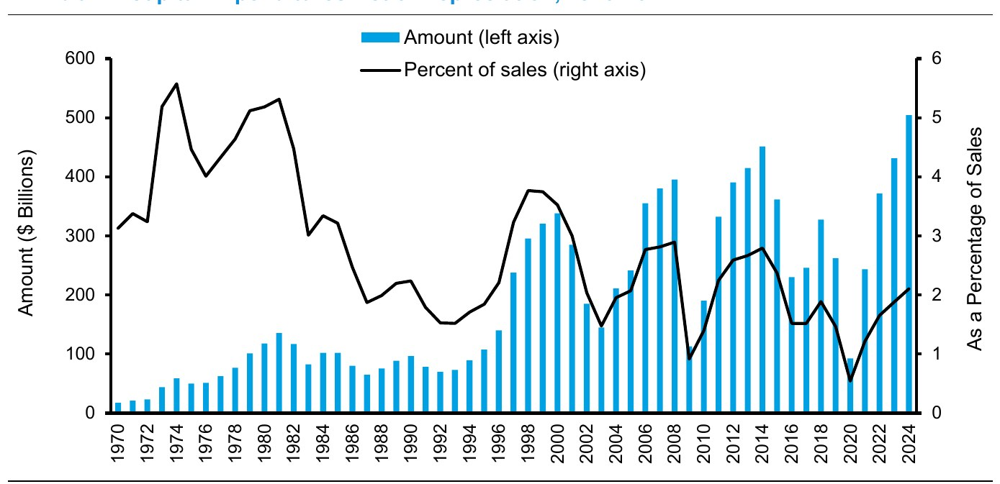
总体而言，资本开支增加的公告往往受到股票市场的欢迎。79这表明市场认为这类支出能够创造价值。但市场对资本开支指引的反应，很大程度上取决于所感知到的机会。80与许多资本配置选项一样，其收益似乎呈现倒 U 形：支出过少和过多都不好，存在一个创造价值的最优水平。81
Like many capital allocation options, the benefits appear to follow the shape of an inverted U. Too little and too much spending is bad, and there is an optimal level for creating value.2025 年上半年，资本开支较上年同期增长约 15%。我们测算，这一增量中 60% 来自仅四家公司的支出：Amazon、Meta、Alphabet 和 Microsoft。这些公司常被称为超大规模云服务商（hyperscalers），它们大规模提供云服务。
We calculate that 60 percent of this increase reflects the spending of just four companies: Amazon, Meta, Alphabet, and Microsoft. Often called hyperscalers, these companies provide cloud services on a large scale.研发在很大程度上属于无形资产投资。研究（research）致力于能够推出新产品或新服务的创新；开发（development）则聚焦于让这些产品或服务对市场有吸引力的过程。
在美国，企业约占研发总支出的 70-75%，联邦政府占 20%，学术界及其他机构占其余的 5-10%。82
In the U.S., businesses account for about 70-75 percent of total R&D spending, the federal government 20 percent, and academia and other entities the other 5-10 percent.美国企业将研发预算的 20-25% 用于研究，75-80% 用于开发。83信息技术与医疗保健板块的研发投入最多。相比之下，联邦政府的研发预算在研究与开发之间的分配更为均衡。
与研发支出大部分用于开发这一事实相一致，研究者认为不应把研发整体都视为可自由支配的无形资产投资。84近期一项研究提出，采用全行业加权平均的口径，约 75% 的研发应被视为投资，其余部分则恰当地归为维持性支出。85
图表 29 以金额和占销售额百分比两种口径展示了 1970 至 2024 年的投资性研发。1970 年代投资性研发约占销售额的 1.0%，此后稳步上升，到 1995 年达到 1.8%，直到 2012 年基本持平，随后快速攀升，2024 年达到销售额的 3.3%。整个期间投资性研发占销售额比重的上升，反映了市场构成的变化：科技、医疗保健与通信服务板块的权重自 1970 年以来已经翻倍，如今占标普 500 指数略高于一半。
Investment R&D was around 1.0 percent of sales in the 1970s, then rose steadily to 1.8 percent by 1995, remained relatively flat until 2012, and then climbed sharply to 3.3 percent of sales in 2024.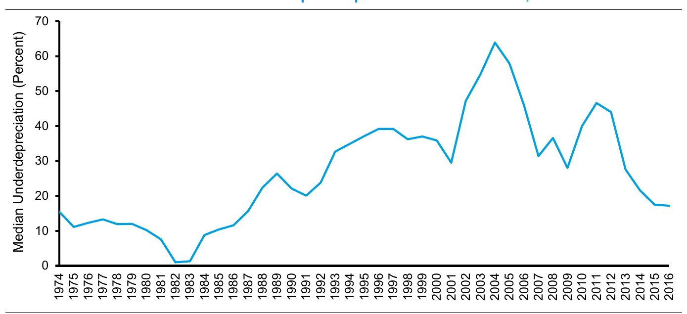
图表 30 展示了扣除摊销后的投资性研发，这与扣除折旧后的资本开支是等价的。该分析假设研发的加权平均资产寿命为 4.8 年。扣除摊销后的投资性研发于 2021 年见顶，为销售额的 1.7%，2024 年回落至长期平均值，即销售额的 0.5%。
This analysis assumes the weighted average asset life for R&D is 4.8 years. Investment R&D net of amortization peaked at 1.7 percent of sales in 2021 and reverted to the long-term average of 0.5 percent of sales in 2024.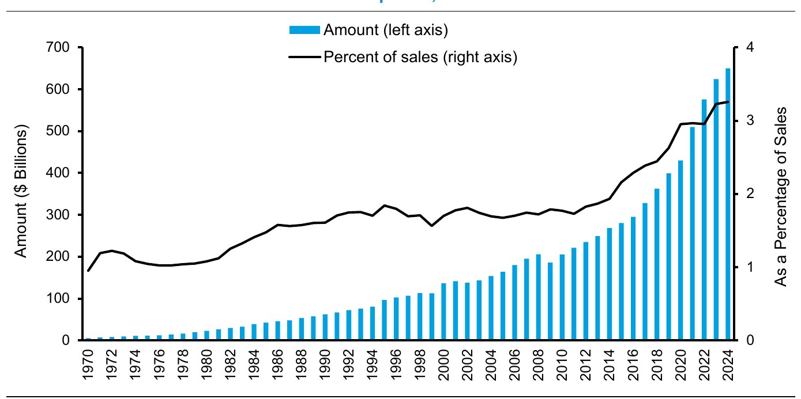
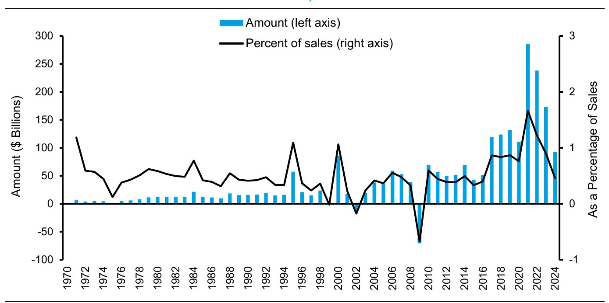
研发生产率衡量的是新产品价值与该产品投入之间的关系。由于投入与产出之间存在时滞，生产率本身难以计量。我们认同区分「研发效率」（R&D efficiency，即推出一个产品所需的成本）与「研发效能」（R&D effectiveness，即每次推出带来的价值）：效率更接近研究，效能更接近开发。
We like the distinction between “R&D efficiency,” the cost to launch, and “R&D effectiveness,” the value per launch. Efficiency is closer to research and effectiveness to development.擅长把产品推向市场的公司，可能不同于那些能通过设计、营销或分销能力的提升来创造价值的公司。86这有助于解释，为何具备研发效能的大型制药公司会收购那些展现研发效率的小公司。
总体来看，证据表明近几十年来研发的回报一直在下降。87圣路易斯华盛顿大学战略学教授 Anne Marie Knott 提出了一项她称之为「研究商数」（research quotient, RQ）的指标。RQ 运用生产函数，在其他变量保持不变的前提下，衡量研发投入（input）增加 1% 所带来的收入（output）增幅百分比。88
她的分析表明，约三分之一的公司研发支出低于最优水平，存在通过增加支出来创造价值的空间；近三分之二的公司支出过高，可以在不损害价值的前提下削减成本。她认为样本中 5% 的公司接近最优。Knott 指出，激进投资者（activist investors）在识别研发支出过度的公司方面相当有一套。89
Her analysis suggests that about one-third of companies spend below the optimal level of R&D and have the opportunity to create value by spending more. Nearly two-thirds spend too much and can cut costs without jeopardizing value. She deems five percent of her sample to be close to optimal.RQ 作为衡量创新与价值的决定因素，为分析增添了价值。90RQ 强调了一点：在任何一种资本配置选项上，恰当的支出水平都取决于当时的具体条件。91近年来平均 RQ 一直在下降，显示出研发支出回报的恶化。
RQ underscores the idea that the right amount to spend on any of the capital allocation alternatives depends on the prevailing conditions.退一步看，与创新相关的长期增长，取决于研究人员的数量及其生产率。一项研究显示，尽管研究投入持续增加，研究生产率却在下降。92另一项研究发现，虽然研发仍能提升公司层面的生产率与价值，但由于激烈竞争导致的快速淘汰，维持优势变得前所未有地困难。93
把一款药品推到市场的实际研发成本在几十年间稳步上升，这为研发相关回报的下降提供了额外证据。94一些会计学教授表示，他们的研究显示「有充分证据表明研发与未来盈利能力之间的关系正在下降」。95
Some accounting professors suggest their research shows “strong evidence of a declining relation between R&D and future profitability.”在我们测算的上市公司样本中，2025 年上半年研发支出较 2024 年同期增长约 9%。与资本开支类似，我们测算这一增量中接近 60% 来自 Amazon、Meta、Alphabet 和 Microsoft 的支出。
净营运资本（net working capital）衡量的是一家公司在正常经营条件下需要占用多少资本，其定义为流动资产减去无息流动负债（NIBCLs）。「流动」是指该项目预期在未来十二个月内会有现金流入或流出。资本配置关注的是净营运资本的变动，把它作为增量投资的度量。
Net working capital is a measure of how much capital a company needs to operate under normal conditions. It is defined as current assets minus non-interest-bearing current liabilities (NIBCLs).近几十年来，净营运资本作为资本配置一项影响因素的重要性在下降，因为它的规模变小了。1970 年代净营运资本接近资产的 30%，如今已不足资产的 10%。存货水平的下降——源于更先进的技术以及向无形资产驱动型业务的转变——是这一下滑的最大原因。96
Net working capital was nearly 30 percent of assets in the 1970s and is less than 10 percent of assets today.图表 31 展示了 1970 至 2024 年净营运资本的年度变化。2024 年末，我们样本中的公司净营运资本为 US$1.5 万亿。整个期间净营运资本投资平均仅占销售额的 0.6%，这一比例显著低于并购、剔除研发后的投资性 SG&A、资本开支和投资性研发。
2025 年上半年净营运资本较 2024 年同期增长略低于 2%。
净营运资本包含现金与短期投资。经营一家企业所必需的现金，往往随公司在其生命周期中所处阶段而变化。尽管如此，许多公司仍持有超额现金。图表 32 展示了剔除超额现金和短期投资后的净营运资本变化。这里我们假设公司需要维持相当于销售额 2% 的现金余额。
我们估算，所测算范围内的公司持有近 US$2.1 万亿的超额现金。如前所述，这些现金持有量的分布非常倾斜：现金与短期投资总额的 1/4 由 10 家公司持有，1/3 由前 21 家公司持有，1/2 由 67 家公司持有。正如后文将看到的，这些现金充裕的公司同时也是派发股息和回购股票的先行者。
We estimate that the companies in the universe we measure hold nearly $2.1 trillion in excess cash. As mentioned above, the distribution of the cash holdings is very skewed.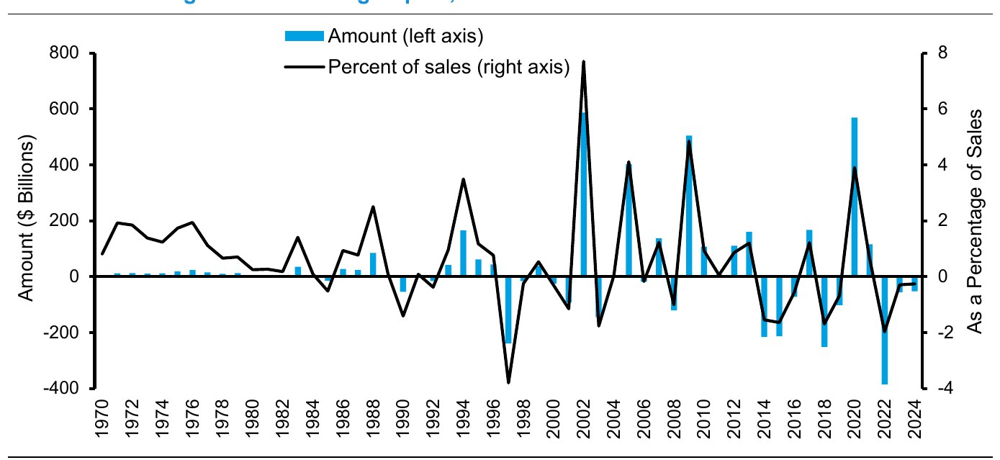
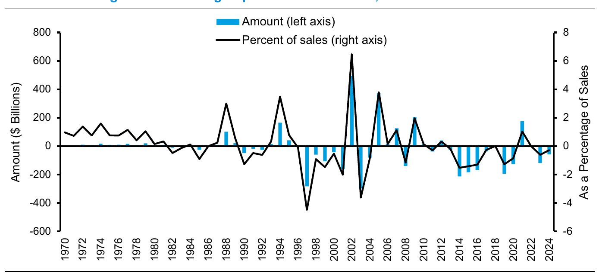
营运资本投资微不足道（de minimis）。但持有超额现金与短期投资的公司，其资本配置选择与计划理应受到审视。我们已记录，美国的现金持有量自 1970 年以来稳步上升，主要原因是无形资产投资的增加。公司持有现金还源于其被视为期权价值的考虑，但这一因素应当被错误配置的风险所约束。97市场对拥有良好投资机会的公司所持现金给予高于账面金额的溢价，对公司治理较差的公司所持现金则给予折价。98
现金转换周期（CCC）衡量在正常经营过程中一家公司的现金有多少天被占用在营运资本上。99图表 33 展示了 2024 年八个板块的现金转换周期。通信服务板块的 CCC 中位数最低，为 30 天；医疗保健板块最高，为 113 天。但每个板块乃至每个行业内部的差异可能很大。例如，2024 年 Amazon 的 CCC 为 -33 天，Macy's 为 45 天。两家公司同属可选消费板块，以及百货零售行业与子行业。
Communication services is the sector with the lowest median CCC, at 30 days, while healthcare has the highest at 113 days. But there can be a great deal of variation within each sector and industry.Amazon 的数据表明，当无息流动负债超过流动资产时，公司可能拥有为负的净营运资本和为负的 CCC。这些公司在必须支付供应商货款之前，就已经收回了所售存货对应的现金。供应商实际上成了一种融资来源。企业不可能永远维持负的现金转换周期，因为所有生意最终都会结束。但负的 CCC 可以持续很长时间。
These firms collect the cash on the inventory that they sell before they have to pay their suppliers. Suppliers effectively serve as a source of financing. Firms can’t have a negative cash conversion cycle forever because all businesses wind down eventually.过高的营运资本可能拖累价值。100但正如新冠疫情引发的供应链困境所凸显的，供应链上效率过高反而可能带来脆弱性。尽管如此，学术研究显示，以 CCC 衡量的、能有效管理营运资本的公司，其股东回报高于管理不佳的公司。101
That said, academic research shows companies that effectively manage their working capital, expressed as the CCC, deliver higher shareholder returns than those that do not.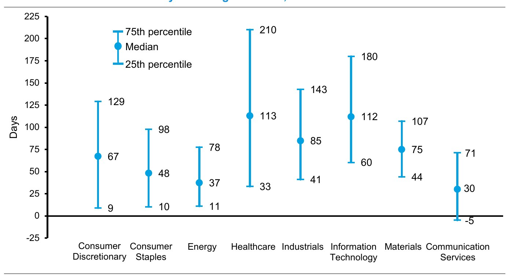
资产剥离（divestiture）包括出售业务部门、分拆（spinoff）和股权切离（equity carve-out），它们会改变一家公司的业务组合。如果某项业务对另一位所有者而言更有价值，或者剥离该业务能让公司更好地聚焦于其他业务、从而改善经营业绩，公司就应当考虑剥离它。
Divestitures, which include the sale of divisions, spinoffs, and equity carve-outs, modify a company’s portfolio of businesses. A firm should consider divesting an operation if it is worth more to another owner or if it allows the company to better focus on its other businesses and hence improve results.高管通常对剥离业务颇为犹豫，原因有几个。102 第一，资产剥离通常是撤回先前决策的结果，因此一笔交易等于承认过去犯了错。103 第二，大多数管理者希望扩张而非收缩自己的业务，而增长意味着更大的责任和更高的薪酬。最后，公司内部常常存在政治因素，会对分拆或出售业务形成阻力。
Executives are often reticent to divest businesses for a few reasons. 102 First, a divestiture is typically the result of unwinding a prior decision. As a result, a deal is an admission of a past mistake. 103 Second, most managers want to grow their businesses rather than shrink them. Growth is consistent with more responsibility and remuneration. Finally, there are commonly political issues within firms that can create resistance to spinning off or selling operations.图 34 展示了 1980 年至 2024 年的资产剥离情况。这些数字包含分拆，但平均而言其中约 85% 的价值来自把资产或业务部门卖给另一家公司。资产剥离受到的关注少于并购（M&A），但仍是资本配置的重要手段。在这段时间里，我们估算美国公司的资产剥离平均相当于销售额的 2.3%。
Exhibit 34 shows divestitures from 1980 to 2024. These figures include spinoffs, but about 85 percent of the value on average is the sale of an asset or division to another company. Divestitures get less attention than M&A but are nonetheless an important means of capital allocation. Over this period, we estimate divestitures have averaged 2.3 percent of sales for companies in the U.S.分拆（spinoff）是指一家上市公司按比例、以免税方式向股东分配一家全资子公司的股份。一个例子是通用电气（General Electric）——它曾是大型企业集团——2023 年分拆出其医疗业务 GE Healthcare Technologies，2024 年分拆出其电力业务 GE Vernova，最终只剩下 GE Aerospace。较近的案例是食品行业集团卡夫亨氏（Kraft Heinz），它宣布将拆分为两部分：“Global Taste Elevation Co.”，一家常温保存餐食（shelf-stable meals）业务；以及“North American Grocery Co.”，一组北美品牌的组合，其中包括肉类和冷切肉制品生产商 Oscar Mayer。
A spin-off is when a public company distributes shares of a wholly-owned subsidiary to its shareholders on a pro-rata and tax-free basis. One example is General Electric, once a major conglomerate, which spun off GE Healthcare Technologies, its healthcare business, in 2023 and GE Vernova, its power business in 2024, leaving only GE Aerospace. A more recent case is Kraft Heinz, the food conglomerate, which announced that it will split into two parts, “Global Taste Elevation Co.,” a shelf-stable meals business, and “North American Grocery Co.,” a portfolio of North American brands that include Oscar Mayer, a producer of meat and cold cuts.图 35 展示了 1980 年至 2024 年已公告分拆的数量和价值。
Exhibit 35 shows the number and value of announced spinoffs from 1980 through 2024.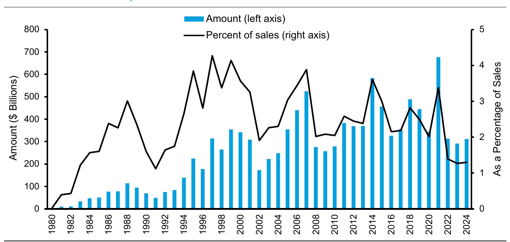
研究显示，资产剥离往往对股东有利，这合乎情理。分析表明，公司相对较少比例的资产创造了大部分价值，这种情况很常见。104 换言之，大多数公司都拥有一些赚不回资本成本的业务，因此这些业务对另一位战略买家或财务买家而言可能更有价值。这类剥离实现了“以减法求加法”（addition by subtraction）：处置所得的价值超过了该业务留在公司内部时的价值。105
Research shows that divestitures tend to be good for shareholders. This stands to reason. Analysis shows that it is common for a relatively small percentage of a company’s assets to create most of the value. 104 In other words, most companies have businesses that fail to earn the cost of capital and therefore may be more valuable to another strategic or financial owner. These divestitures lead to addition by subtraction, as the value of the proceeds exceeds the value of the operation as part of the company. 105正如前面所见，并购（M&A）总体上创造价值，但卖方往往拿走超过 100% 的价值。平均而言，做卖方优于做买方。
As we saw, M&A creates value in the aggregate but the seller frequently captures more than 100 percent of that value. It is better, on average, to be a seller than a buyer.当一项资产有多个竞买人时，卖方表现尤其出色。在竞价交易中，买方常常要面对“赢家诅咒”（winner’s curse）。106 此时，竞拍的“赢家”出价过高，只能承受多付的“诅咒”。赢家诅咒描述的正是财富从买方转移到卖方的过程。
Sellers do particularly well when an asset has multiple suitors. In a contested deal, the buyer is often subject to the “winner’s curse.” 106 In this case, the “winner” of an auction offers too much for the asset and has to accept the “curse” of overpaying. The winner’s curse describes a wealth transfer from the buyer to the seller.关于并购（M&A）的学术论文数量几乎是以六比一的比例超过关于资产剥离的论文。107 一项汇总近 100 项资产剥离研究的元分析得出结论：
从最宽泛的意义上说，我们的结果表明，平均而言，资产剥离行为与母公司积极的业绩结果相关联。108Academic papers on M&A outnumber those about divestitures by nearly a six to one margin. 107 A meta-analysis of nearly 100 studies on divestitures concludes: “In the broadest possible terms, our results suggest that on average, divestiture actions are associated with positive performance outcomes for the parent firm.” 108
分拆通常既为被分拆的公司、也为母公司创造价值。109 近期一项针对分拆文献的元分析的核心发现是：
“分拆、企业集团及其股东，都从免税的资产剥离以及公司随后的重新聚焦中获益。”110
推动这一价值创造的因素包括管理层聚焦的锐化、对业务的更好理解，以及税务处理。111
Spin-offs generally create value for the spinoffs themselves as well as the corporate parents. 109 The central finding of a recent meta-analysis of the spinoff literature was: “spin-offs, conglomerates, and stockholders benefit from tax-free divestiture and subsequent refocusing by the companies.” 110 The drivers of this value creation include sharpened managerial focus, better information about the business, and tax treatment. 111一家公司一生中能支付给股东的现金总量，最终决定了股东价值。股息、股份回购，以及出售公司换取现金所得的款项，是股东获得现金的三种主要方式。股息是支付给股东的现金，通常由利润提供资金。
The sum of cash a company can pay shareholders over its lifetime ultimately determines shareholder value. Dividends, share buybacks, and proceeds from the sale of the company for cash are the three main ways shareholders get cash. A dividend is a cash payment to a shareholder that is generally funded by profits.在严格的假设下，股息与回购是等价的（见附录）。112 但大多数高管认为两者存在实质性的差别。股息一经设定，就被视为与资本开支（capex）等投资决策性质相同的东西。回购则更多被看作公司在做完所有合适的投资之后，把剩余现金发出去的一种方式。113 因此，股息的波动性远小于回购（见图 36）。1970 年至 2024 年，股息增长率的标准差约为回购的六分之一。
Dividends and buybacks are equivalent under strict assumptions (see appendix). 112 But most executives think of them as meaningfully different. Dividends, once set, are considered equivalent to investment decisions such as capital expenditures. Buybacks are seen more as a way to disburse residual cash after the firm has made all suitable investments. 113 As a result, dividends are much less volatile than buybacks (see exhibit 36). The standard deviation of the growth rate of dividends from 1970 to 2024 is around one-sixth that of buybacks.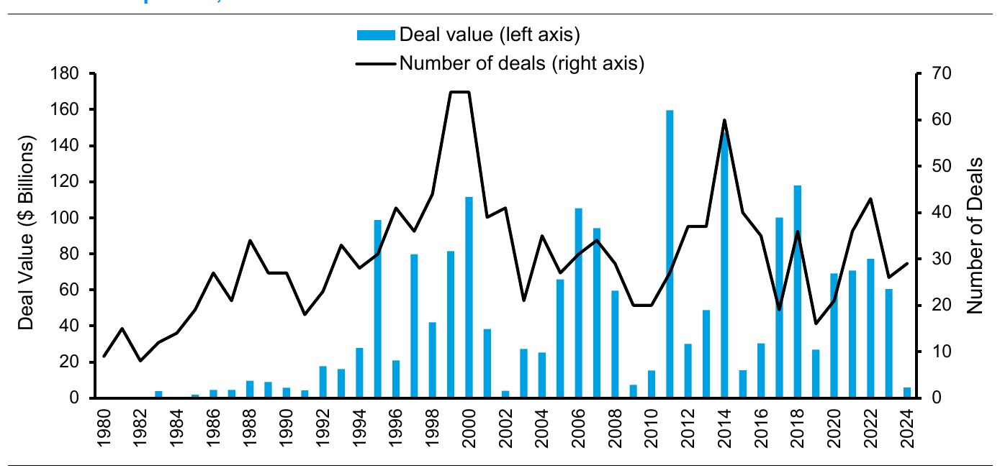
图 37 以美元金额和占净利润百分比两种口径展示了 1970 年至 2024 年的股息情况。即便在 2008–2009 年金融危机和 2020 年新冠疫情爆发期间，股息也表现出惊人的韧性。114
Exhibit 37 shows dividends as a dollar amount and as a percentage of net income from 1970 through 2024. Dividends were remarkably resilient even during the financial crisis of 2008-2009 and the COVID outbreak in 2020. 114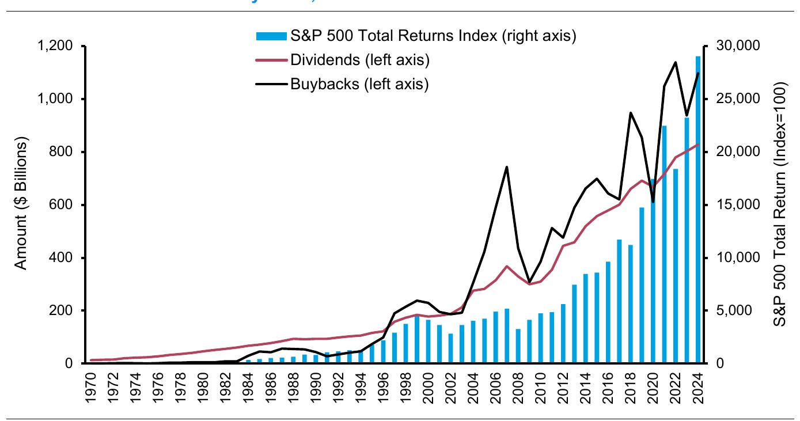
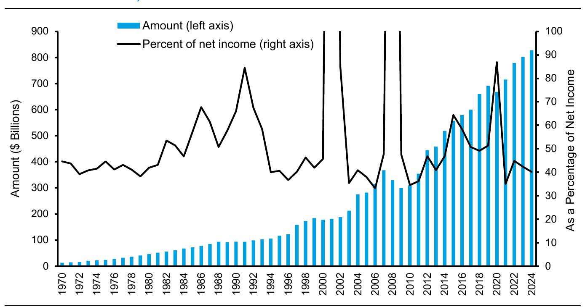
相对于回购，股息在 20 世纪 80 年代和 90 年代初的重要性有所下降，直到 21 世纪才有所回升。例如，20 世纪 70 年代末有 10 家公司中有 7 家派发股息，而到 2002 年只有 10 家中有 3 家派发；到 2016 年回升至 10 家中有 4 家，之后又缓慢走低，到 2024 年重新回到 10 家中有 4 家（见图 38）。115 该项分析统计普通股股息和优先股股息。
Relative to buybacks, dividends became less relevant in the 1980s and early 1990s, only to rebound somewhat in the twenty-first century. For example, 7 in 10 companies paid a dividend in the late 1970s, and just 3 out of 10 did so in 2002. That recovered to 4 in 10 by 2016, then drifted lower again, only to rise back to 4 out of 10 in 2024 (see exhibit 38). 115 This analysis counts common and preferred dividends.以股息和回购两种形式返还资本的倾向更强，反映出美国上市公司比以往任何时期都更成熟、盈利能力更强。116
The greater proclivity to pay out capital, both in the form of dividends and buybacks, reflects the fact that public companies in the U.S. are more mature and more profitable than they were in previous eras. 116在调查中，首席财务官（CFO）把盈利的稳定性与可持续性，以及投资者的偏好，列为决定股息支付政策最重要的因素。117 实际上，股息依然是对未来盈利信心的有用信号，因为公司必须创造超出基本需求的现金流才能维持股息。118
When surveyed, chief financial officers (CFOs) cite the stability and sustainability of earnings, as well as the preference of their investors, as the most important factors determining dividend payout policy. 117 In effect, dividends remain a useful signal of confidence in future earnings because a company must generate cash flow beyond its basic needs to sustain a dividend. 118股息也被视为计算股东总回报（TSR）时的一项重要输入。例如，宾夕法尼亚大学沃顿商学院荣休教授杰里米·西格尔（Jeremy Siegel）在其最新版《长期持股》（Stocks for the Long Run）中考察了股市的长期表现，并断言“股息远不愧为股东回报最重要的来源”。119 如果你想衡量的是累积资本，这个说法就是错的。只有价格升值才是随时间增加累积资本的投资回报来源。120
Dividends are also perceived to be an important input into the calculation of total shareholder return (TSR). For example, in his latest edition of Stocks for the Long Run, Jeremy Siegel, a professor emeritus from the Wharton School at the University of Pennsylvania, examines long-term results for the stock market and asserts that “dividends are by far the most important source of shareholder return.” 119 This is wrong if you seek to measure accumulated capital. Price appreciation is the only source of investment return that increases accumulated capital over time. 120年度股票收益率（股价变动加上股息率）很容易计算。但股东总回报（TSR）是一个多期指标，假设所有股息都再投资于该股票。如果知道价格升值幅度和股息率，就可以这样计算 TSR：
股东总回报（TSR）= 价格升值 + [(1 + 价格升值) × 股息率]
Total shareholder return (TSR) = Price appreciation + [(1 + price appreciation) × dividend yield]
如果股价因股息再投资的复利效应而上涨，一年期股票收益率总是低于股东总回报。例如，假设价格升值 8%、股息率 3%，股票收益率为 11.00%（.08 + .03），而股东总回报为 11.24%（.08 + [(1 + .08) × .03]）。
A one-year equity rate of return is always lower than the TSR if the price rises due to the compounding of reinvested dividends. For example, assume price appreciation of 8 percent and a dividend yield of 3 percent. The equity rate of return is 11.00 percent (.08 + .03) but the TSR is 11.24 percent (.08 + [(1 + .08) × .03]).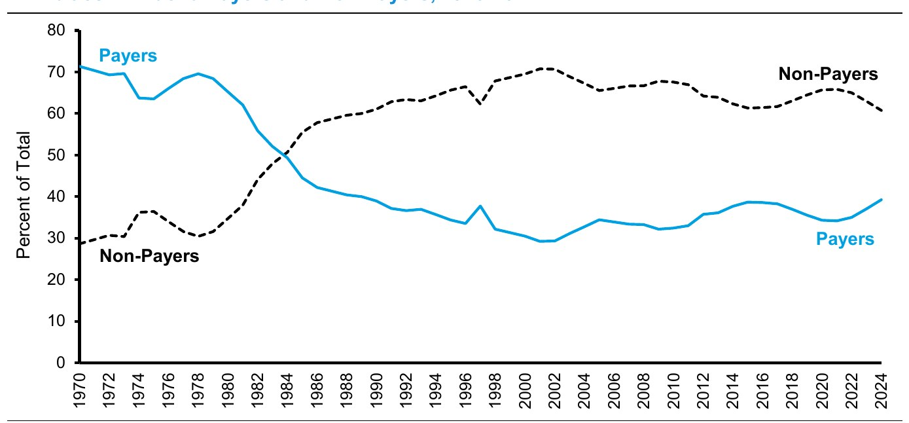
投资者必须把股息全额再投资回该股票，才能获得股东总回报。这其中有两个问题：投资者通常并不会把股息再投资回股票，而且股东总回报并未考虑税收和其他交易成本的作用。
An investor must reinvest dividends back into the stock in full to earn the TSR. There are two problems with this. Investors generally do not reinvest their dividends back into the stock and TSR does not consider the role of taxes and other transaction costs.近年来的大量研究表明，很少有机构投资者或个人投资者把股息再投资于支付股息的那只股票。121 投资者并不以同样的方式看待价格升值与股息。此外，许多投资者和市场评论人士陷入了“免费股息谬论”（free dividends fallacy），认为股息是抵御价格波动的缓冲，却没意识到股息是以价格水平为代价的。122
Substantial research in recent years shows that few institutional or individual investors reinvest their dividends in the stock of the payer. 121 Investors do not think of price appreciation and dividends in the same way. Further, many investors and market commentators fall for the “free dividends fallacy,” which deems dividends to be a buffer against price fluctuations without recognizing that dividends come at the expense of the price level. 122由于对再投资采用了不同的假设，一些学者认为股东总回报被低估了，另一些则认为它被高估了。123 这凸显出理解投资者实际上如何使用股息的重要性，也清楚表明“全额再投资”这一假设很少成立。
Using different assumptions about reinvestment, some academics conclude that TSRs are understated while others contend they are overstated. 123 This underscores the importance of understanding how investors actually use their dividends and makes clear that the presumption of full reinvestment is rarely correct.税收是这道题中重要的一环。持有应税账户股票的投资者必须为收到的股息缴税。图 39 展示了 1954 年至今资本利得与股息所适用的最高个人边际税率。假设只有股息中未被课税的部分被再投资，股东总回报就会下降。学术研究支持这样一个观点：分配环节的税率会影响股东回报。124
Taxes are an important part of the equation. Investors who own stocks in taxable accounts must pay taxes on the dividends they receive. Exhibit 39 shows the maximum individual marginal tax rate for capital gains and dividends from 1954 to the present. Assuming that only the non-taxed portion of dividends are reinvested drops the TSR. Academic research supports the view that the tax rate on payouts affects shareholder returns. 1242025 年上半年，我们覆盖范围内公司的股息较上年同期增长了中个位数百分比（mid-single digits）。
Dividends for the companies in our universe grew in the mid-single digits in the first half of 2025 relative to the prior year.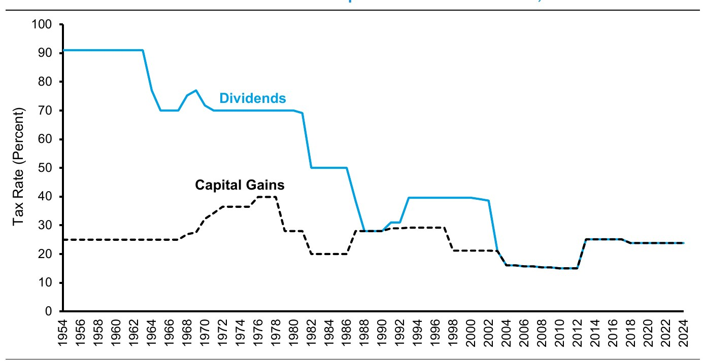
股份回购是公司向股东返还现金的第二种方式。股息对所有股东一视同仁，而通过回购拿到现金的只有那些向公司卖出股份的股东。
Share buybacks are the second way that firms return cash to shareholders. All shareholders are treated equally with a dividend, but only those shareholders who sell to the company get cash with a buyback.回购成了政客和少数经济学家的众矢之的，而他们似乎并不了解回购的运作方式，以及相关研究的结论。125 金融学教授肯·弗伦奇（Ken French）指出：
“回购是分裂性的。它把懂金融的人和不懂金融的人区分开来。”126Buybacks have become a lightning rod for politicians and a minority of economists who do not appear to understand how buybacks work and what the research says about them. 125 Ken French, a professor of finance, has noted, “Buybacks are divisive. They divide people who do understand finance from people who don’t.” 126
这种怨愤的一个表现是：2022 年的《通胀削减法案》（Inflation Reduction Act of 2022）于当年 8 月签署生效，其中包含对回购征收 1% 的消费税（按扣除发行后的净额计算，含股份支付（SBC））。这项税在经济上并无重大影响，但确实使回购要面对三轮税收：公司缴纳的企业所得税与消费税，以及投资者缴纳的资本利得税。
In one manifestation of this vitriol, the Inflation Reduction Act of 2022, signed into law in August of that year, includes a one percent excise tax on buybacks (net of issuance, including stock-based compensation). This tax is not of great economic consequence but does make buybacks subject to three rounds of taxes: corporate and excise taxes paid by companies, and capital gains taxes paid by investors.图 40 以美元金额和占净利润百分比两种口径展示了 1970 年至 2024 年的股份回购。在这段时期的后半段，公司用回购支付出去的净利润占比明显高于前半段。
Exhibit 40 shows buybacks as a dollar amount and as a percentage of net income from 1970 to 2024. The percent of net income that companies are paying out in buybacks was meaningfully higher in the second half of this period than it was in the first half.回购在近几十年变得重要得多，但公司使用回购已有很长历史。例如，1962 年纽约证券交易所（NYSE）上市的公司回购了 US$11 亿的股票（按 2024 年美元计为 US$93 亿），而同期资本开支为 US$373 亿（按 2024 年美元计为 US$3,160 亿）。127 当时的讨论聚焦于回购占交易量的比例。1934 年的《证券交易法》禁止操纵证券价格，但什么构成操纵并不总是清楚。事实上，证券交易委员会（SEC）不时指控公司通过回购计划操纵自家股票。128
Buybacks have become much more prominent in recent decades, but companies have used them for a long time. For example, in 1962 companies on the New York Stock Exchange bought back $1.1 billion of stock ($9.3 billion in 2024 dollars) versus $37.3 billion ($316.0 billion) in capital expenditures. 127 Discussions at that time focused on buybacks as a proportion of trading volume. The Securities and Exchange Act of 1934 prohibited the manipulation of securities prices, but what constituted manipulation was not always clear. Indeed, from time to time the Securities and Exchange Commission (SEC) charged companies with manipulating their stock through buyback programs. 1281982 年 SEC 通过 10b-18 规则后，情况发生了变化。该规则给予公司安全港保护，前提是其回购计划在方式、时点、价格和成交量方面遵循特定指引。SEC 多年来不断更新规则以适应市场状况。在 10b-18 规则颁布前五年，通过回购的支付占盈利的 5%；颁布后五年，则超过了 40%。129
This changed when the SEC adopted Rule 10b-18 in 1982. The rule grants companies a safe harbor provided they follow certain guidelines for their buyback programs in terms of manner, timing, price, and volume. The SEC has updated the rules over the years to reflect market conditions. Five years prior to the enactment of Rule 10b-18, the payout via buybacks was five percent of earnings. Five years after, it was more than 40 percent. 129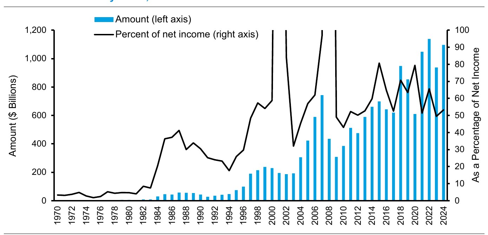
虽然在公司整体支付中回购已经超过股息，但整体支付水平却异常稳定。图 41 展示了 1970 年至 2024 年的股东回报率（shareholder yield，即回购加股息除以市场的股权资本），以及股权资本成本的估计值。我们同时展示了扣除股权发行前后的股东回报率。
While buybacks have surpassed dividends in overall corporate payouts, the aggregate payout has been remarkably steady. Exhibit 41 shows the shareholder yield, defined as buybacks plus dividends divided by the equity capital of the market, as well as an estimate of the cost of equity, from 1970 to 2024. We show the shareholder yield gross and net of equity issuance.毛口径的股东总回报从 1970 年相当于股权成本的 27% 上升到 2024 年的 38%。股东总回报是长期股市回报的关键驱动力之一，比单看股息率具有更强的可预测性。130
The gross total shareholder yield went from 27 percent of the cost of equity in 1970 to 38 percent in 2024. Total shareholder yield is among the key drivers of long-run stock market returns and provides more predictability than dividend yield alone. 130基于对回购动机的调查，我们把公司归入公平价值派（fair value school）、内在价值派（intrinsic value school）和会计驱动派（accounting-driven school）三类思路。131 一家公司可能同时受到不止一种思路的驱动。对持续持股的股东而言，内在价值派最为有利。
Based on surveys of the motivations to pursue buybacks, we place companies into the fair value, intrinsic value, and accounting-driven schools of thought. 131 Companies can be motivated by more than one school at a time. The intrinsic value school is best for continuing shareholders.公平价值派对回购采取平稳而一致的策略。管理层认为，无论股价高估还是低估，公司都会回购，但长期来看平均价格将是公允的。这种做法给股东提供了很大的灵活性：他们既可以继续持股、递延纳税义务，也可以按比例卖出一部分股份，从而制造“自制股息”（homemade dividends）。
The fair value school takes a steady and consistent approach to buybacks. Management believes that it will buy back shares when they are both overvalued and undervalued, but over time the average price will be fair. This approach offers shareholders substantial flexibility as it allows them to either hold shares and defer tax liabilities or create homemade dividends by selling a pro-rated number of shares.这一派别同时支持自由现金流假说（free cash flow hypothesis），即手中握有超额现金的管理层会倾向于投资于净现值为负的项目。无论通过回购还是派息把现金发出去，都能降低管理层把资金用于愚蠢用途的风险。132 研究还显示，许多公司如果持续回购股票会受益。133
This school also supports the free cash flow hypothesis, which says that managers who have excess cash will be tempted to invest in projects that have a negative net present value. Disbursing cash, whether through a buyback or a dividend, lessens the risk that management will deploy the funds foolishly. 132 The research also shows that many firms would do well by buying back stock consistently. 133内在价值派建立在市场择时（market timing）的理念之上：具体而言，公司只应当在股份看起来被低估时才回购。要把这事做对并从中获利，公司的管理层必须掌握股价未能反映的信息。
The intrinsic value school is based on the idea of market timing. Specifically, a firm should only buy back shares when they appear undervalued. To do this profitably, a company’s management must have information that the stock price fails to reflect.难点在于，对财务政策往往有很大发言权的 CFO 校准严重失当。例如，在一个典型季度的调查中，50%–80% 的 CFO 认为自家公司的股票被低估。134 CFO 在给自家公司股票估值时最常引用的方法，是“当前价格相对于历史高点和低点的位置”。135 这不能让人放心。
The challenge is that CFOs, who often have a large say in matters of financial policy, are badly miscalibrated. For example, 50-80 percent of them say the stock of their company is undervalued when surveyed in a typical quarter. 134 The most common method that CFOs cite for valuing the stock of their company is “current price relative to historic highs and lows.” 135 This does not instill confidence.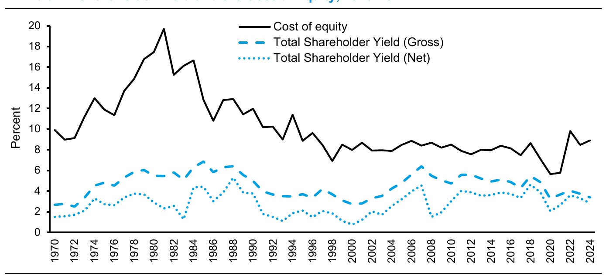
内在价值派的公司遵循股份回购的黄金法则（golden rule）：
“公司只有在股票交易价格低于其预期价值、且没有更好的投资机会可用时，才应该回购自己的股份。”136Firms in the intrinsic value school adhere to the golden rule of share buybacks: “A company should repurchase its shares only when its stock is trading below its expected value and when no better investment opportunities are available.” 136
黄金法则设定了一个绝对基准，同时承认相对价值的重要性。以低于内在价值的价格买入股票，是提高每股价值板上钉钉的办法。但如果公司的内部投资机会回报率高于回购，就应当优先考虑内部投资机会。
The golden rule sets an absolute benchmark while recognizing relative value. Buying stock below its intrinsic value is a surefire way to increase value per share. But companies should prioritize internal investment opportunities if they have higher returns than buybacks.理想情况下，CFO 应当对各类投资机会的预期价值排序，并从高到低依次出资。但现实中，CFO 把“手头有多余现金／流动性资产”列为决定是否回购股票最重要的因素。137
CFOs should ideally rank the expected value of various investment opportunities and fund them from highest to lowest. In reality, CFOs list “having extra cash/liquid assets” as the most important factor determining their decision to buy back stock. 137需要说清楚的是，回购低估或高估的股票对公司本身既不创造价值，也不毁损价值，它只是把财富从一组股东转移到另一组股东。回购低估股票的公司把财富从卖方转移到持续持股方；回购高估股票的公司则把价值从持续持股方转移到卖方。
To be clear, buying back undervalued or overvalued stock does not create or destroy value for the company. It transfers wealth from one group of shareholders to another. A company that buys back undervalued stock transfers wealth from the sellers to the ongoing holders. A company that buys back overvalued stock transfers value from the ongoing holders to the sellers.图 42 给出一个简单示例。公司价值为 US$100,000，流通在外股份为 1,000 股，即每股内在价值为 US$100（US$100,000 ÷ 1,000 股）。公司决定向股东返还 US$20,000。下面展示三种情景，可以看到当股价明显偏离内在价值、或者公司改为派发股息时会发生什么。
Exhibit 42 presents a simple example. The firm value is $100,000 and there are 1,000 shares outstanding, which means that the intrinsic value per share is $100 ($100,000 ÷ 1,000). The company decides to return $20,000 to shareholders. We show three scenarios. We can see what happens if the stock price deviates meaningfully from intrinsic value or if the company pays a dividend.首先要注意的是，分配之后公司的价值将为 US$80,000。没有价值被创造，也没有价值被毁损。分配前公司价值 US$100,000，分配后公司价值 US$80,000，而股东口袋里多了 US$20,000。我们要理解的是其中的财富转移。
The first thing to recognize is that the value of the firm following the disbursement will be $80,000. There is no value created or lost. Before the payout the firm is worth $100,000, and after the payout the firm is worth $80,000 and shareholders have $20,000 in their pocket. We want to understand the wealth transfers.先假设股价为 US$200，是公允价值的两倍。在情景 A 中，公司买入 100 股（US$20,000 ÷ US$200），此后公司价值为 US$80,000，流通在外股份为 900 股。卖方股东每股获利 US$100（US$200所得 − US$100价值 = US$100），持续持股的股东每股亏损 US$11.11（US$88.89持续价值 − US$100初始价值 = −US$11.11）。回购高估股票使卖方受益、持续持股方受损。
Let’s start with the assumption that the stock price is $200, double the fair value. In scenario A, the company buys 100 shares ($20,000 ÷ $200), which leaves $80,000 of corporate value and 900 shares outstanding. The selling shareholders gain $100 per share ($200 proceeds - $100 value = $100) and the continuing shareholders lose $11.11 per share ($88.89 continuing value - $100 initial value = -$11.11). Buying back overvalued stock benefits sellers at the expense of ongoing holders.再来看如果股价为每股 US$50、相当于公允价值一半时会发生什么。在情景 B 中，公司可以买入 400 股，此后公司价值为 US$80,000，流通在外股份为 600 股。卖方股东每股亏损 US$50（US$50所得 − US$100价值 = −US$50），持续持股的股东每股获利 US$33.33（US$133.33持续价值 − US$100初始价值 = US$33.33）。回购低估股票使持续持股方受益、卖方受损。
Now we look at what happens if the stock trades at $50 per share, one-half of its fair value. The company can buy 400 shares in scenario B. This leaves $80,000 of value and 600 shares outstanding. The selling shareholders lose $50 per share ($50 proceeds - $100 value = -$50) and continuing shareholders gain $33.33 per share ($133.33 continuing value - $100 initial value = $33.33). Buying back undervalued stock benefits the ongoing holders at the expense of sellers.为完成分析，情景 C 考虑公司向全体股东派发每股 US$20股息的情形。股价无关紧要：公司价值降至 US$80,000，每位股东收到每股 US$20（US$20,000 ÷ 1,000 股），只有税收因素才决定每位股东最终能留下多少。
To complete the analysis, scenario C considers the case when the company pays a $20 dividend to all shareholders. The stock price does not matter. The firm value drops to $80,000, each shareholder receives $20 per share ($20,000 ÷ 1,000), and only tax considerations will determine how much each shareholder can keep.这项分析还有其他几点值得指出。第一，如果你持有某家正在回购股票公司的股份，那么“不作为”就等于提高了你在公司的持股比例。如果你不希望持股比例上升，可以按持股比例卖出相应股份。这实际上制造了一种股息，同时保持了在企业中的持股比例不变。
Other features of this analysis are worth pointing out. First, if you own shares of a company buying back stock, inaction is equivalent to increasing your percentage ownership in the company. If you do not want your percentage stake to rise, you can sell shares in proportion to your ownership position. This effectively creates a dividend while maintaining the same percentage ownership in the business.奇怪的是，有些投资者声称更希望自己组合里持有的公司派发股息而不是回购股票。或许他们看重的是股息所传递的信号。但如果你持有某家公司的股份是因为你正确地认为它被低估，那么回购按定义就会提高每股价值。
Some investors, curiously, claim they prefer that the companies they hold in their portfolio pay a dividend rather than buy back stock. Perhaps the focus is on the signal a dividend conveys. But if you own shares of a company because you correctly think it is undervalued, buybacks will by definition increase value per share.尽管对管理层择时能力表示怀疑是合理的，实证研究在若干结论上趋于一致。第一，平均而言，公司能够对股票的卖出与买入进行择时，从而让持续持股的股东受益。138 但在高估股票的卖出中发生的财富转移，通常要大于在低估股票的买入中所发生的财富转移。139 最后，机构投资者在与公司交易方面通常比个人投资者更娴熟。140
While it would be reasonable to doubt management’s ability to time the market, the empirical research converges on some conclusions. First, on average companies can time the sale and purchase of equity so as to benefit ongoing shareholders. 138 But the wealth transfers are generally larger for sales of overpriced equity than they are for purchases of undervalued equity. 139 Finally, institutional investors are usually more adept than individual investors at transacting with companies. 140回购和股权发行往往向投资者传递有用的信号，85% 的财务高管认同或强烈认同“回购决策向投资者传递了关于我们公司的信息”。141 有若干因素决定信号的强弱。
Buybacks and equity issuance tend to be useful signals to investors, and 85 percent of financial executives agree or strongly agree that “repurchase decisions convey information about our company to investors.” 141 A few factors determine the strength of the signal.把已经宣布的计划执行完毕是个好开始。回购方式本身也在传递信念强度。公开市场购买（open-market purchase）是使用最普遍的方式，但它传递的信念最弱。荷兰式拍卖（Dutch auction）和要约收购（tender offer）如今已很少见，但它们传递出强烈的正面信号，尤其是在回购以债务融资时。142 最后，大规模计划比小规模计划传递更多信息；如果内部人持股比例较高、且高管表示无意卖出任何股份，信号的可信度就会提升。143
Completing programs that are announced is a good start. The method of buybacks also signals conviction. Open-market purchases, the most commonly used by far, signal the weakest conviction. Dutch auctions and tender offers are now rare but suggest a strong positive signal, especially when the buyback is funded with debt. 142 Finally, large programs convey more information than small ones do, and the credibility of the signal rises if there is high insider ownership and executives indicate that they do not intend to sell any shares. 143委托—代理问题（principal-agent problem）及其伴生的代理成本，在回购的讨论中也会出现。回购既可能解决代理成本，也可能制造代理成本。144 它解决代理成本的方式是把资本返还给股东，从而限制价值毁损型投资的可能性；当回购被用作让高管获利、或者仅仅为了让高管看起来更风光时，它就制造了代理成本。
The principal-agent problem and its associated agency costs show up in the discussion of buybacks. Buybacks have the potential to either solve or create agency costs. 144 They solve agency costs by returning capital to shareholders, thus limiting the potential for value-destroying investments. They create agency costs when buybacks are used as a means to enrich executives or simply to make them look good.会计驱动派利用回购来改善会计结果，包括提高每股收益（EPS）或减少与股份支付（SBC）相关的摊薄。例如，在一项调查中，
The accounting-driven school uses buybacks to improve accounting outcomes, including increasing earnings per share or reducing dilution associated with stock-based compensation (SBC). For example, in one survey,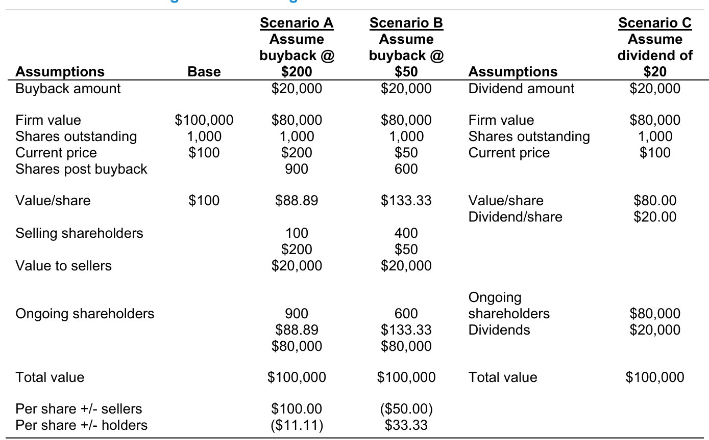
76% 的 CFO 表示，提高每股收益是决定回购股票时一个重要或非常重要的因素；68% 的 CFO 表示，抵消股份支付带来的摊薄是重要或非常重要的因素。145 研究表明，近年来的回购中有三分之一以上是为了抵消股份支付导致的股本增加。146
76 percent of CFOs said that increasing EPS was an important, or very important, factor in the decision to buy back stock. And 68 percent indicated that offsetting dilution from SBC was important or very important. 145 Research suggests that more than one-third of buybacks in recent years have gone to counter the increase in shares as the result of SBC. 146正如我们在并购中看到的，没有证据表明通过回购提高每股收益能提升股东价值。147 价值创造与每股收益变化是两个不同的概念，不应把每股收益的提升当作价值创造的替代指标。事实上，“回购总会提升每股收益”这一假设是错的。回购对每股收益的影响，取决于市盈率倍数，以及为该计划提供资金而放弃的税后利息收入或税后债务成本。148
As we saw with M&A, there is no evidence that increasing EPS increases shareholder value with buybacks. 147 Value creation and changes in EPS are separate concepts, and EPS increases should not be used as a proxy for value creation. Indeed, the presumption that buybacks always increase EPS is wrong. A buyback’s impact on EPS is a function of the price-earnings multiple and the foregone after-tax interest income or after-tax cost of debt used to fund the program. 148会计驱动派的结果或许无害，但动机并不纯粹，一旦与价值创造原则相抵触，就会制造代理成本。有充分的证据表明，公司回购股票是为了管理业绩（manage earnings），或为了达成能触发奖金的财务目标。149 这些目标与“管理层应以创造股东价值的方式配置资本”这一理念并不一致。
While results of the accounting-driven school may be benign, the motivations are impure and create agency costs if they conflict with the principle of value creation. There is plenty of evidence that companies buy back stock to manage earnings or to reach a financial objective that prompts a bonus. 149 These goals are inconsistent with the idea that management should allocate capital so as to create value for shareholders.了解管理层的思考过程与激励机制，有助于评估回购创造价值的潜力。实际上，大多数公司同时属于我们描述的多类思路之中。但投资者应当对那些依据会计结果而非经济实质来做决策的公司保持警惕。
Knowing about management’s thought process and incentives can help in assessing the value-creating potential of buybacks. In reality, most companies are in more than one of the schools we described. But investors should flag those companies making decisions based on the accounting results rather than on the economic merits.通过股息或回购把资本返还给投资者，可以让资本从前景较差的机会重新配置到前景更好的机会上。150 这是自由市场体系中的一项关键功能。图 43 展示了 1970 年至 2024 年的总净支付率（total net payout ratio，即股息加上净股份回购除以净利润）。总体而言，这一比率在后半段远高于前半段。
Returning capital to investors through dividends or buybacks allows for the reallocation of capital from opportunities that are less promising to those that are more promising. 150 This is a vital function in a free market system. Exhibit 43 shows the total net payout ratio, defined as dividends plus net share buybacks divided by net income, from 1970 to 2024. Overall the ratio was much higher in the second half than the first half of this period.在我们覆盖的公司中，2025 年上半年的股份回购较 2024 年同期增长约 13%。增幅主要来自第一季度，第二季度同比基本持平。
Share buybacks were up about 13 percent in the first half of 2025, versus 2024, for the companies within our universe. Most of that increase came in the first quarter, with the second quarter relatively flat year-over-year.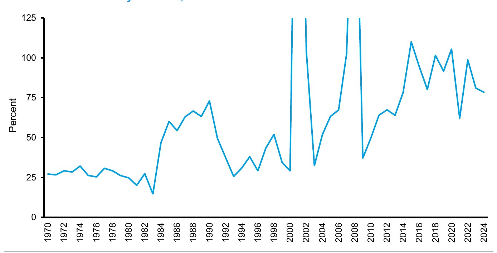